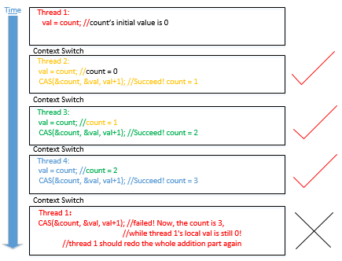

Lock-free vs spin-lock
So, given a piece of code, how do you know if it's lock-based or lock-free? Let's first see two examples. Both of them are multi-threads get access to a shared variable and do the addition on it. Here is the version by using lock-free programming.
1 #inlcude<stdio.h>
2 #include<stdatomic.h>
3 #include<pthread.h>
4
5 int count = 0;
6 void *adding(void *input)
7 {
8 int val;
9 for(int i=0; i<1000000; i++)
10 {
11 do{
12 val = count;
13 }while(!atomic_compare_exchange_weak(&count, &val, val+1));
14 }
15 pthread_exit(NULL);
16 }
17
18 int main()
19 {
20 pthread_t tid[10];
21 for(int i=0; i<10; i++)
22 pthread_create(&tid[i], NULL, adding, NULL);
23 for(int i=0; i<10; i++)
24 pthread_join(tid[i], NULL);
25 printf("the value of count is %d\n", count);
26 }
Here is the version of spin-lock for the same purpose.
1 #include<stdio.h>
2 #include<stdatomic.h>
3 #include<pthread.h>
4
5 int count = 0;
6 int lock = 0;
7 void *adding(void *input)
8 {
9 int expected = 0;
10 for(int i=0; i<1000000; i++)
11 {
12 while(!atomic_compare_exchange_weak(&lock, &expected, 1))//if the lock is 0(unlock), then set it to 1(lock)
13 expected = 0;//if the CAS fails, the expected will be set to 1, so we need to change it to 0 again.
14 count++;
15 lock = 0;
16 }
17 }
18
19 int main()
20 {
21 pthread_t tid[10];
22 for(int i=0; i<10; i++)
23 pthread_create(&tid[i], NULL, adding, NULL);
24 for(int i=0; i<10; i++)
25 pthread_join(tid[i], NULL);
26 printf("the value of count is %d\n", count);
27 }
Let's see the output and performance of the above two programs.
Lock-free:
the value of count is 10000000
Below is the running time:
real 0m2.687s
user 0m10.652s
sys 0m0.0004s
Lock-based:
the value of count is 10000000
Below is the running time:
real 0m3.755s
user 0m14.820s
sys 0m0.012s
From the above result, we could see that lock-free program is better than spin-lock program. Let's see the addition part of both programs.(For the lock-free program, it is the code from line 11 to 13, for the spin-lock program, it is the code from line 12 to 15) They're both loops, and very similarly-looking ones. Moreover, we can loop at both loops for a period of time. How come they're at the opposite sides of the locking/lock-free distinction?! Does lock-free program really perform better than lock-based program?
Let's first see an example.
lock-free

lock-based

There are 4 threads modify the shared variable count, and they try to get access to the shared variable count and do the addition on it. From the above two images, we could see that in lock-free program, while thread 1 is accessing the shared variable count, other threads could also get access to the count _and make progress for the program. However, for the lock-based program, while thread 1 is accessing the shared variable _count, it holds the lock and other threads could not access the count but busy-waiting. So, here, we could see the difference between them. For the lock-free program, every thread could get access to the shared object no matter whether another thread is accessing the shared object or not.(Although sometimes, there could be some conflicts(just like thread 1), and the thread should redo its work. ) However, for the lock-based program, if one thread is accessing the shared object, other threads would be blocked and have no way to get access to the shared object. Also, from the above images, we could also know why the above lock-free program is quicker than lock-based program.
However, does lock-free program always perform better than lock-based program? Let's see an example.
lock-free
lock-based

In the above images, we could see that the progress of lock-based program is quicker than lock-free program. So, it is not necessary that lock-free program always performs better than lock-based program.